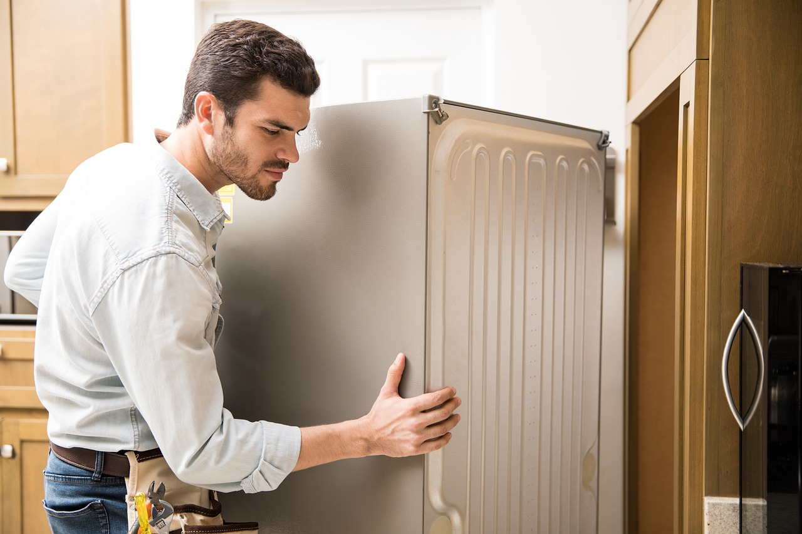

Moving Services

Moving.com reviews each of our moving company partners before we allow them to offer quotes through our service. Here are the Moving.com criteria that all movers must meet so that we can ensure you are receiving trustworthy, safe, and reliable service:
Professional movers must possess the proper operating authority needed to operate as a household goods carrier.
Each mover must possess the appropriate amount of insurance coverage needed to transport household goods.
Interstate movers (i.e., state-to-state) must provide valid USDOT and/or MC license numbers.
Intrastate (local) movers (i.e., within state lines) must provide valid license numbers based on imposed state or federal requirements.
Movers may use only their Legal or DBA (doing-business-as) Name in their interactive advertising campaign.
Each mover has acknowledged and agreed that the resale and/or redistribution of leads is strictly prohibited.
All interstate movers have acknowledged and agreed to abide by the 110% rule for collecting charges on non-binding estimates
Moving.com only partners with licensed and insured moving companies. We use the Federal Motor Carrier Safety Administration's (FMCSA) SAFER database to verify a moving company's operating authority and insurance coverage. In addition, interstate movers in our network must have valid USDOT and/or MC license numbers, and intrastate movers in our network must provide valid license numbers. These are just a few ways we vet our large network of movers. Read our Commitment to Quality statement to find out more about our vetting process.